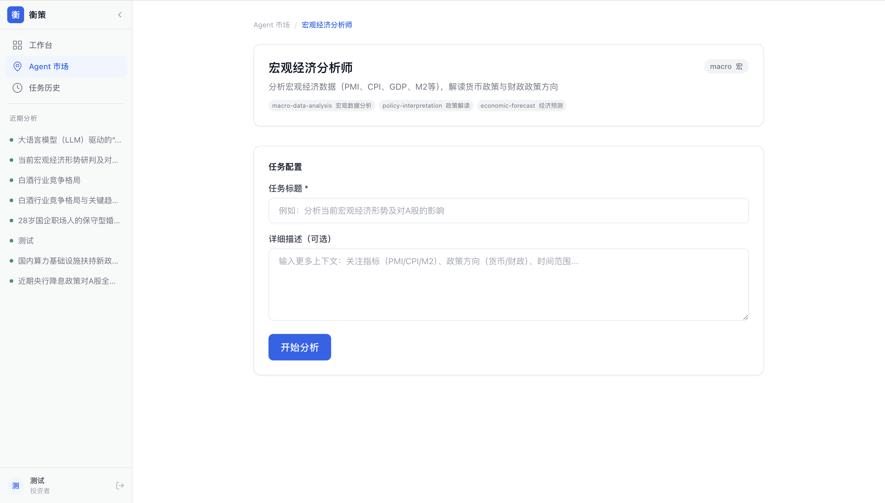

YIJIN / FINANCIAL RESEARCH WORKBENCH01 — 10
面向证券公司与基金公司的金融智能体工作台
把研究工作
组织成一支团队。
弈金让用户上传材料、提出研究问题，Commander 自动拆解任务，专业 Agent 并行分析，最后交付一份可追溯、可复核的金融研究草稿。
弈金让用户上传材料、提出研究问题，Commander 自动拆解任务，专业 Agent 并行分析，最后交付一份可追溯、可复核的金融研究草稿。
他们缺的是一个能把资料、搜索、计算、分工、核验和报告串成闭环的工作台。
公告、年报、网页和研报分散在不同入口。
行业、基本面、消息面和风险需要多条线并行。
关键数字必须回到页码、表格或明确链接。
研究结论仍需人工复核、编辑和留痕。
面向 A 股上市公司深度研究，支持上传 PDF、联网补充公开信息、结构化任务编排、引用核验、人工复核与报告导出。
输入公司、问题、范围；上传年报或公告 PDF。
识别目标，生成结构化任务图和依赖关系。
行业、基本面、消息面、估值和风险分别执行。
保存引用、质量状态和待复核项，再生成报告。
原始数据、计算数据和模型判断分开保存；关键数字回到 PDF 页码、表格位置或明确公开来源。


弈金不替代工行既有底座，而是把多模型、企业知识、专业 Agent 和人工复核组织成可落地的研究工作流。
将年报、公告、公开信息组织成可追溯研究底稿。
辅助科技型企业尽调、行业分析和融资材料整理。
把引用、数字、模型判断和待复核项分层管理。
为专业知识库和业务流程提供可复用的编排入口。
Commander 生成任务图。
多个 Agent 同时工作。
SSE 流式展示过程。
点击来源核对结论。
报告可导出但不越过人。
弈金｜面向金融机构的可追溯研究智能体工作台